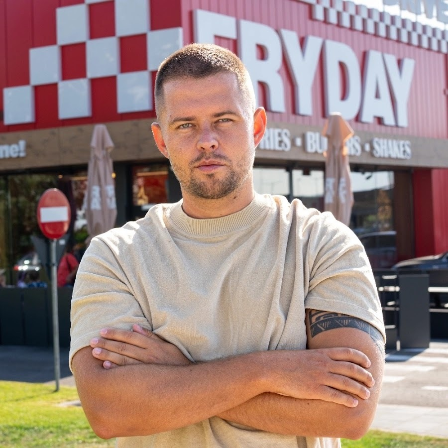
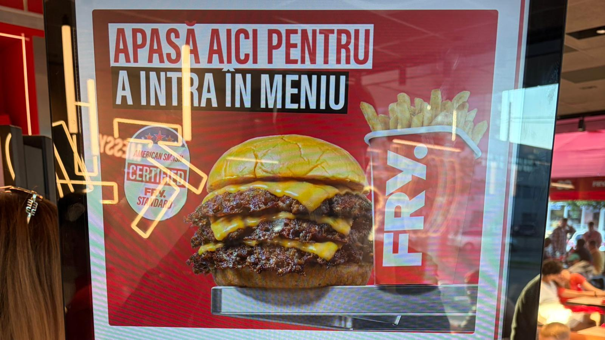
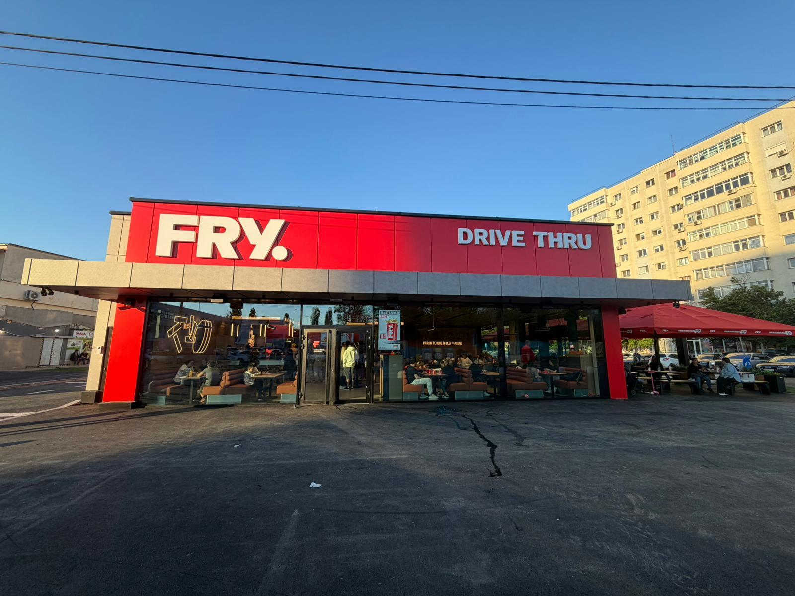
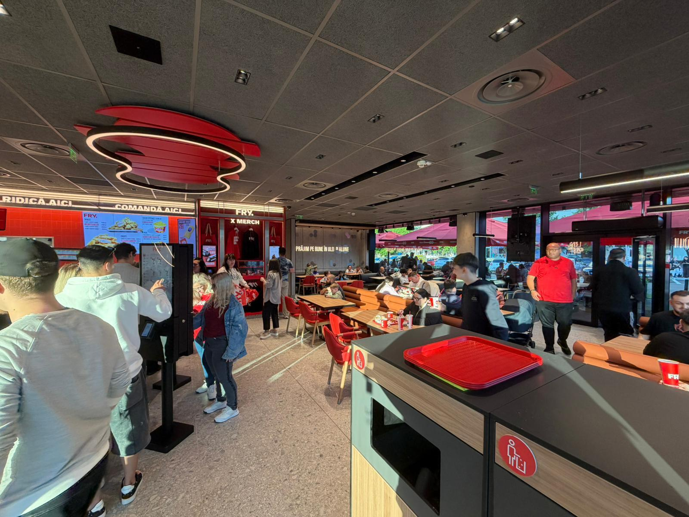
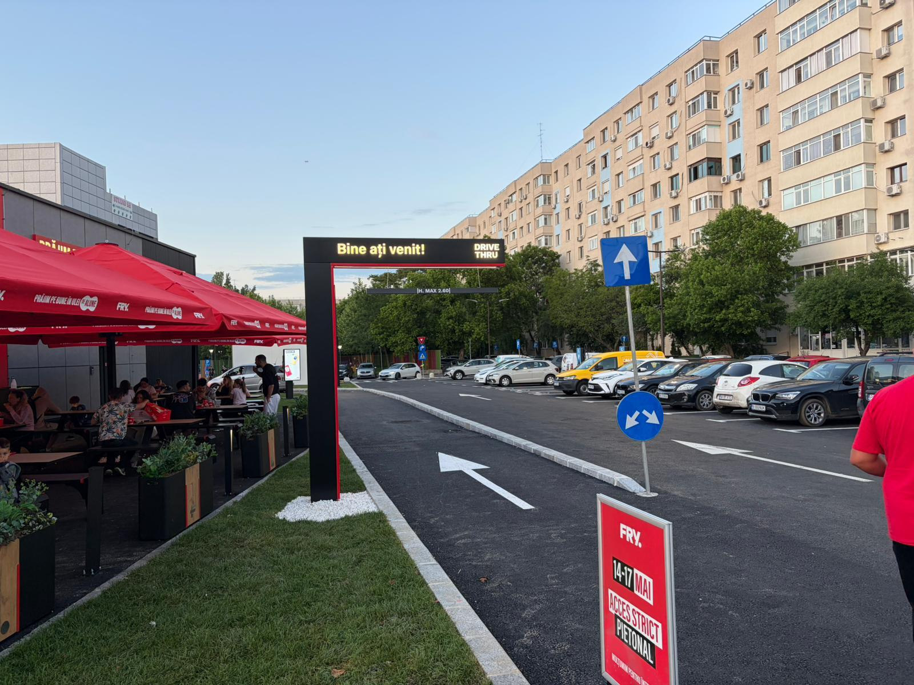
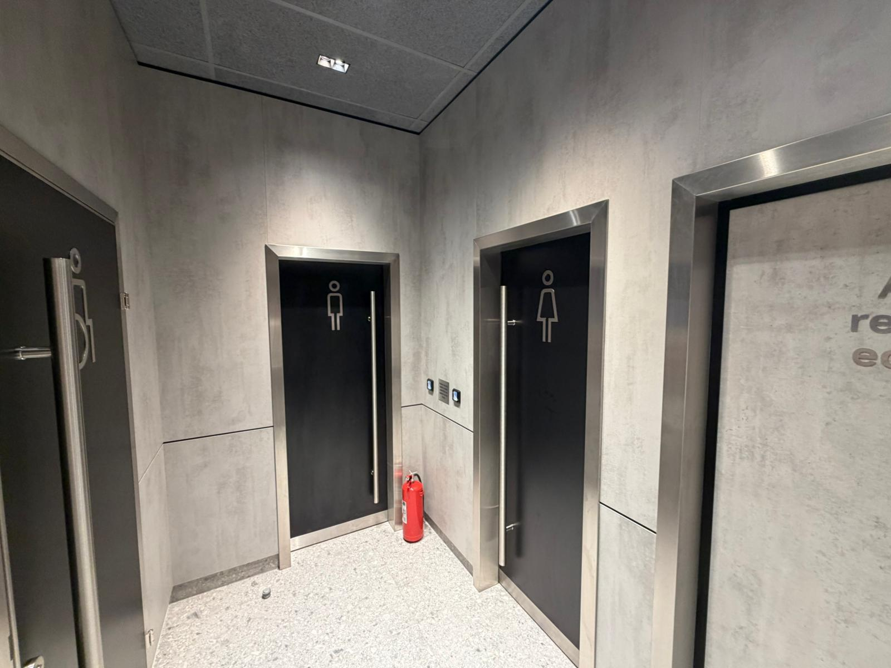
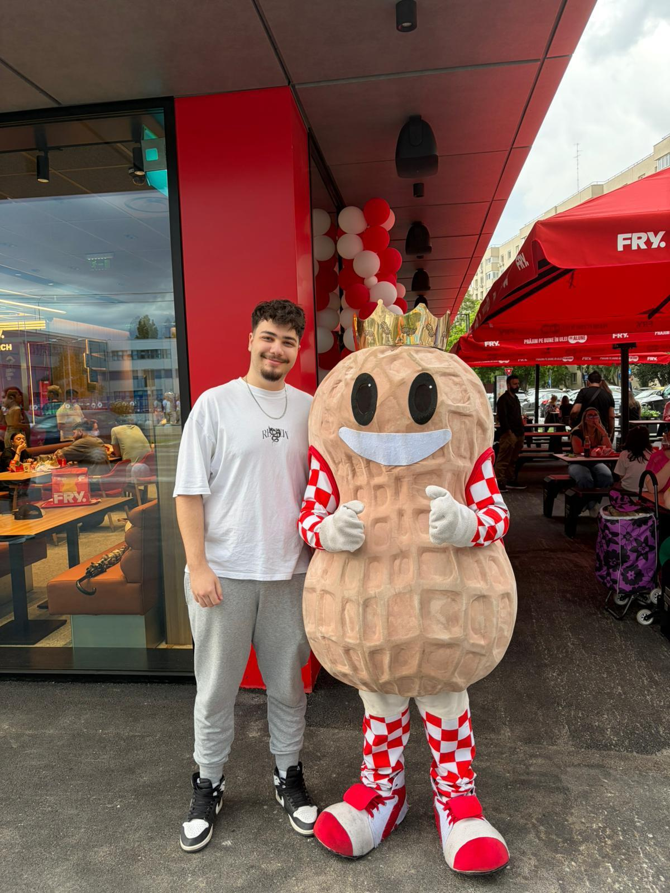

Ce este fenomenul FRYDAY?
Fondat în anul 2019 la Suceava, FRYDAY a apărut pe piața românească din dorința de a sparge tiparele clasice ale restaurantelor de tip fast-food și de a concura direct cu marile lanțuri internaționale. Brandul s-a remarcat rapid printr-o identitate vizuală extrem de puternică, o comunicare curajoasă și, mai ales, prin calitatea superioară a ingredientelor folosite în prepararea meniului.
Povestea Brandului FRYDAY
În doar câțiva ani de la lansare, conceptul FRYDAY s-a transformat într-un adevărat fenomen la nivel național. Brandul s-a extins rapid în centre comerciale majore și locații stradale de tip Drive-Thru din orașe de referință precum București, Iași, Craiova, Oradea, Arad, Alba Iulia și Timișoara. Restaurantele sunt recunoscute pentru designul lor modern, complet digitalizat prin kioskuri de comandă rapidă, atmosferă dinamică și un flux de servire impecabil.
Secretul din spatele succesului constă în atenția obsesivă pentru detalii și în dorința de a nu face compromisuri de la calitate. De la carnea de vită proaspătă și sosurile dezvoltate după rețete proprii, până la faimoșii cartofi prăjiți exclusiv în ulei de alune, brandul oferă o alternativă superioară pe piața din România. FRYDAY nu este doar un loc unde mănânci rapid, ci o destinație culinară care oferă o experiență gastronomică premium, accesibilă oricui.
Conceptul Restaurantului
Apasă pe taburile de mai jos pentru a descoperi conceptul restaurantului:
Misiunea FRYDAY este de a revoluționa piața de fast-food din România prin extinderea unui lanț de restaurante modern, axat pe calitate premium și servire rapidă. Brandul își propune să ofere clienților o alternativă autentică la rețetele clasice americane, păstrând standarde riguroase în fiecare locație sau linie Drive-Thru.
Sinceritate în fața clientului, gust intens și transparență absolută. Lanțul FRYDAY nu se ferește de un preparat „messy" – pentru că un gust cu adevărat bogat se savurează din plin, fără bariere.
FRYDAY se diferențiază pe piață fiind primul lanț de restaurante din România care folosește exclusiv ulei de alune pur pentru prăjirea cartofilor, oferindu-le o textură crocantă unică și reducând absorbția de grăsimi.
Omul din spatele succesului
Lucian Florea – Fondator FRYDAY
Antreprenorul sucevean Lucian Florea a lansat conceptul FRYDAY din dorința de a demonstra că un brand românesc de fast-food se poate bate de la egal la egal cu marile francize internaționale. Pornind de la o idee curajoasă, acesta a transformat pasiunea pentru gastronomie și rigoare într-un business de succes cu extindere rapidă la nivel național.
"În business nu contează doar să vinzi, ci să creezi o emoție, un ritual. La FRYDAY nu vindem doar mâncare, vindem o experiență premium accesibilă tuturor."

Galerie Imagini

Meniul Perfect

Fațada Restaurantului

Interior Restaurant
Experiența Drive-Thru
Pentru clienții aflați în mișcare, restaurantele FRYDAY pun la dispoziție o linie modernă de Drive-Thru, concepută pentru a prelua și livra comenzile într-un timp record, direct la fereastra mașinii.

Facilități & Acces Securizat
Pentru a asigura un mediu curat și confortabil, accesul la toaletele clienților în cadrul restaurantului se face pe baza unui cod QR unic de acces, generat automat și printat pe spatele fiecărui bon fiscal.

Mascota Oficială: Aluna! 🥜
Un element definitoriu și amuzant al brandului este mascota sa, care amintește de ingredientul secret: uleiul de alune.
